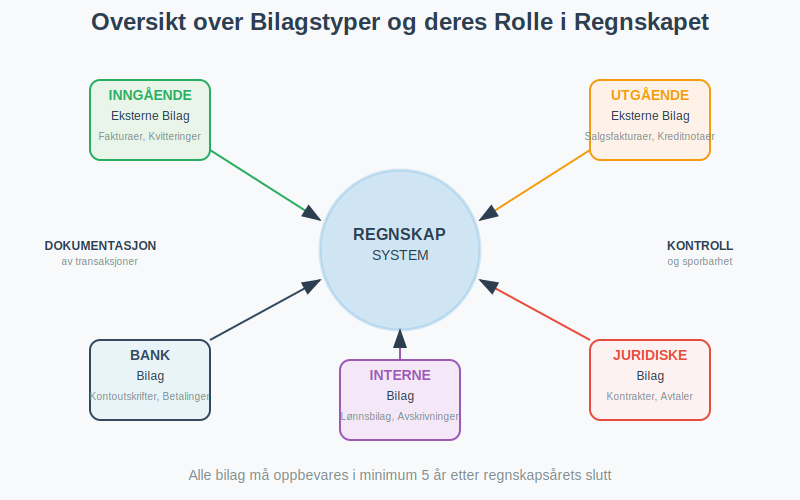
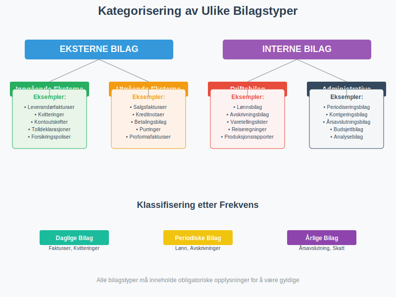
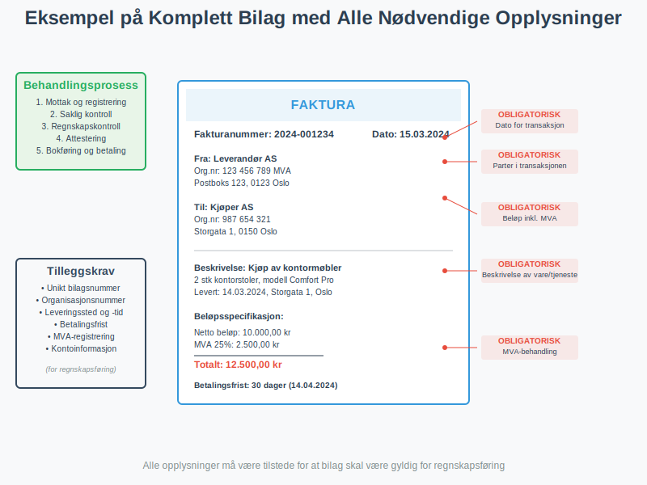
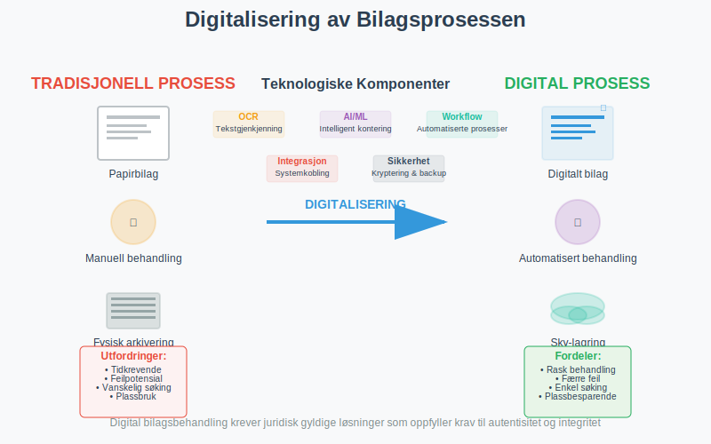
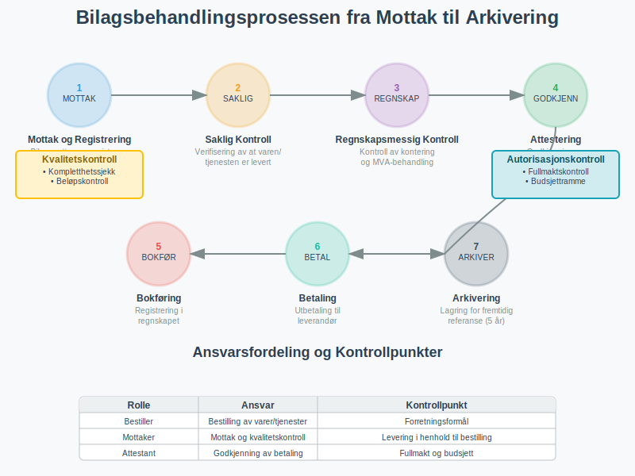
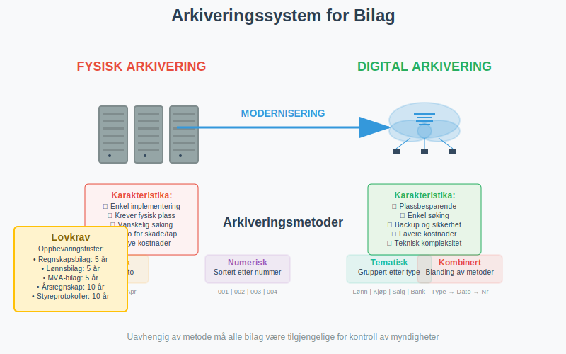

Bilag er grunnleggende støttedokumenter som dokumenterer alle forretningshendelser i regnskapet. De fungerer som bevis for at en transaksjon har funnet sted og gir nødvendig informasjon for korrekt bokføring. Uten bilag ville regnskapet mangle troverdighet og kunne ikke oppfylle lovkravene til dokumentasjon. Bilag er derfor selve fundamentet for pålitelig regnskapsføring og er essensielle for internkontroll i alle bedrifter.
For en komplett guide til bilag i regnskap, se Bilag i Regnskap.
Hva er et Bilag?
Et bilag er ethvert dokument som dokumenterer en forretningshendelse og gir grunnlag for en regnskapspostering. Bilag kan være både inngående (mottatt fra eksterne parter) og utgående (sendt til eksterne parter), samt interne (opprettet internt i bedriften). Alle bilag må inneholde tilstrekkelig informasjon til at transaksjonen kan rekonstrueres og kontrolleres på et senere tidspunkt.

Lovkrav til Bilag
I henhold til bokføringsloven og bokføringsforskriften må alle regnskapspostringer være dokumentert med bilag. Bilagene må oppbevares i minst 5 år etter regnskapsårets slutt, og de må være tilgjengelige for kontroll av skattemyndighetene og revisor.
For en omfattende guide til korrekt oppbevaring av regnskapsmateriale, inkludert lovkrav, oppbevaringsfrister, digitale løsninger og sikkerhetsprinsipper, se vår detaljerte artikkel.
Disse kravene er en del av det omfattende regelverket som styrer norsk regnskapsføring. For en detaljert gjennomgang av alle bokføringsregler og standarder, anbefaler vi vår komplette guide.
Typer Bilag i Regnskapet
Bilag kan kategoriseres på flere måter avhengig av deres opprinnelse, innhold og funksjon. Her er en oversikt over de viktigste typene:

Eksterne Bilag
Eksterne bilag er dokumenter som utveksles med parter utenfor bedriften:
Inngående Eksterne Bilag
- Fakturaer - Krav om betaling fra leverandører
- Pakkesedler - Leveringsdokumenter som følger med vareleveranser
- Sluttseddel - Dokumentasjon av sluttavregning for leveranser og tjenester, se Sluttseddel
- Kvitteringer - Bevis for kontantbetaling
- Kontoutskrifter - Oversikt over banktransaksjoner
- Tolldeklarasjoner - Dokumentasjon av import/eksport
- Forsikringspoliser - Avtaler om forsikringsdekning
- Leasing - Avtaler om leasing av anleggsmidler
Utgående Eksterne Bilag
- Salgsfakturaer - Krav om betaling til kunder
- Pakkesedler - Leveringsdokumenter sendt med egne vareleveranser
- Kreditnotaer - Korrigeringer av tidligere fakturaer
- Betalingsbilag - Dokumentasjon av utbetalinger
- Betalingsoppfordringer - Purringer til kunder
Interne Bilag
Interne bilag opprettes av bedriften selv for å dokumentere interne hendelser:
- Lønnsbilag - Dokumentasjon av lønnsutbetalinger og arbeidsgiveravgift
- Avskrivningsbilag - Dokumentasjon av verdifall på anleggsmidler
- Periodiseringsbilag - Fordeling av kostnader og inntekter over flere perioder
- Korrigeringsbilag - Rettelser av tidligere posteringer
- Varetellingslister - Dokumentasjon av lageropptelling
- Reiseregninger - Dokumentasjon av ansattes utlegg og godtgjørelser
Oversikt over Bilagstyper og Oppbevaringskrav
| Bilagstype | Beskrivelse | Oppbevaringstid |
|---|---|---|
| Inngående faktura | Dokumentasjon av kjøp fra leverandører | Minst 5 år |
| Utgående faktura | Dokumentasjon av salg til kunder | Minst 5 år |
| Kvittering | Dokumentasjon av kontantbetaling | Minst 5 år |
| Kontoutskrift | Dokumentasjon av banktransaksjoner | Minst 5 år |
| Lønnsbilag | Dokumentasjon av lønnsutbetalinger | Minst 5 år |
| Internt bilag | Intern dokumentasjon av forretningshendelser | Minst 5 år |
Krav til Bilagsinnhold
For at et bilag skal være gyldig for regnskapsføring, må det inneholde visse obligatoriske opplysninger:
| Opplysning | Beskrivelse | Eksempel |
|---|---|---|
| Dato | Når transaksjonen fant sted | 15.03.2024 |
| Beløp | Transaksjonens verdi inkl. MVA | 12.500,00 kr |
| Parter | Hvem som er involvert | Leverandør AS og Kjøper AS |
| Beskrivelse | Hva transaksjonen gjelder | Kjøp av kontormøbler |
| MVA-behandling | Merverdiavgift spesifisert | 2.500,00 kr (25% MVA) |
| Kontering | Hvilke kontoer som berøres | Konto 1200 og 2700 |

Spesielle Krav for Ulike Bilagstyper
Enkelte bilagstyper har tilleggskrav utover de grunnleggende opplysningene:
- Fakturaer: Må inneholde fakturanummer, organisasjonsnummer og betalingsfrist
- Kvitteringer: Må være maskinelt utskrevet eller digitalt generert
- Reiseregninger: Må dokumentere forretningsformål og være godkjent av overordnet
- Kontantbilag: Må ha kvittering eller annen form for betalingsbevis
Digitale Bilag og Elektronisk Arkivering
Moderne bedrifter beveger seg stadig mer mot digitale bilagsløsninger. Dette gir betydelige fordeler i form av effektivitet, søkbarhet og plassbesparelse, men krever også at visse tekniske og juridiske krav oppfylles.

Fordeler med Digitale Bilag
- Økt effektivitet - Raskere behandling og godkjenning
- Bedre søkbarhet - Enkel gjenfinning av historiske bilag
- Reduserte kostnader - Mindre behov for fysisk lagring
- Forbedret internkontroll - Automatiske kontroller og sporbarhet
- Miljøvennlig - Redusert papirforbruk
Juridiske Krav til Digitale Bilag
For at digitale bilag skal være juridisk gyldige, må de oppfylle følgende krav:
- Autentisitet - Bilagets opprinnelse må kunne verifiseres
- Integritet - Innholdet må ikke kunne endres uten at det oppdages
- Lesbarhet - Bilag må være lesbare gjennom hele oppbevaringsperioden
- Tilgjengelighet - Må være tilgjengelige for kontroll av myndigheter
Tekniske Løsninger for Digital Bilagsbehandling
Moderne regnskapssystemer tilbyr omfattende funksjoner for digital bilagsbehandling:
- OCR-teknologi - Automatisk gjenkjenning av tekst i bilag
- Automatisk kontering - Forslag til kontoføring basert på bilagsinnhold
- Workflow-styring - Automatiserte godkjenningsprosesser
- Integrasjoner - Kobling til bank og andre systemer
- Backup og sikkerhet - Sikker lagring med redundans
Bilagsbehandling og Internkontroll
Effektiv bilagsbehandling er en kritisk del av bedriftens internkontroll. En systematisk tilnærming sikrer at alle transaksjoner blir korrekt dokumentert og godkjent før de bokføres.

Bilagsbehandlingsprosessen
En typisk bilagsbehandlingsprosess består av følgende trinn:
- Mottak og registrering - Bilag mottas og registreres i systemet
- Saklig kontroll - Verifisering av at varen/tjenesten er levert
- Regnskapsmessig kontroll - Kontroll av kontering og MVA-behandling
- Attestering - Godkjenning av autorisert person
- Bokføring - Registrering i regnskapet
- Betaling - Utbetaling til leverandør
- Arkivering - Lagring for fremtidig referanse
Ansvarsfordeling i Bilagsbehandling
For å sikre god internkontroll bør ulike personer ha ansvar for forskjellige deler av prosessen:
| Rolle | Ansvar | Kontrollpunkt |
|---|---|---|
| Bestiller | Bestilling av varer/tjenester | Forretningsformål |
| Mottaker | Mottak og kvalitetskontroll | Levering i henhold til bestilling |
| Regnskapsfører | Kontering og MVA-behandling | Korrekt regnskapsføring |
| Attestant | Godkjenning av betaling | Fullmakt og budsjett |
| Kasserer | Utbetaling | Godkjent bilag |
Kontrollrutiner for Bilag
Bedrifter bør etablere faste rutiner for bilagskontroll:
- Nummerserier - Alle bilag skal ha unike, fortløpende numre
- Kompletthetssjekk - Kontroll av at alle obligatoriske opplysninger er til stede
- Beløpskontroll - Verifisering av beregninger og summer
- Autorisasjonskontroll - Sikring av at kun autoriserte personer kan godkjenne
- Periodisk gjennomgang - Regelmessig kontroll av bilagsbehandlingen
- Daglig kontroll - Integrert del av dagsoppgjør rutiner
Oppbevaring og Arkivering av Bilag
Korrekt oppbevaring av bilag er ikke bare et lovkrav, men også en praktisk nødvendighet for bedriftens drift og kontroll. Bilag utgjør en sentral del av den totale dokumentasjonen i regnskap og bokføring, som omfatter alle aspekter av regnskapsdokumentasjon fra lovkrav til moderne digitale løsninger.

Oppbevaringsfrister
Norsk lovgivning stiller klare krav til hvor lenge ulike typer bilag må oppbevares:
- Regnskapsbilag: Minimum 5 år etter regnskapsårets slutt
- Lønnsbilag: Minimum 5 år etter utbetaling
- MVA-bilag: Minimum 5 år etter innlevering av MVA-melding
- Årsregnskap: 10 år etter regnskapsårets slutt
- Styreprotokoller: 10 år etter møtedato
Fysisk vs. Digital Oppbevaring
Bedrifter kan velge mellom fysisk og digital oppbevaring, eller en kombinasjon:
Fysisk Oppbevaring
Fordeler:
- Enkel å implementere
- Ingen tekniske krav
- Akseptert av alle myndigheter
Ulemper:
- Krever fysisk lagringsplass
- Vanskelig å søke i
- Risiko for skade eller tap
- Høye kostnader ved store volumer
Digital Oppbevaring
Fordeler:
- Plassbesparende
- Enkel søking og gjenfinning
- Bedre sikkerhet med backup
- Lavere kostnader på lang sikt
Ulemper:
- Krever teknisk kompetanse
- Avhengig av teknologi
- Må oppfylle juridiske krav til integritet
Arkiveringssystemer
Uavhengig av om bilag oppbevares fysisk eller digitalt, må de organiseres systematisk:
- Kronologisk arkivering - Sortert etter dato
- Numerisk arkivering - Sortert etter bilagsnummer
- Tematisk arkivering - Gruppert etter type eller leverandør
- Kombinert system - Blanding av flere metoder
Vanlige Feil og Utfordringer
Mange bedrifter opplever utfordringer med bilagsbehandling. Her er de mest vanlige problemene og hvordan de kan løses:
Manglende eller Ufullstendige Bilag
Problem: Bilag som mangler obligatoriske opplysninger eller som ikke kan dokumentere transaksjonen tilstrekkelig.
Løsning:
- Etabler klare rutiner for hva som kreves av bilag
- Opplær ansatte i bilagskrav
- Implementer kontroller som fanger opp mangler før bokføring
Forsinket Bilagsbehandling
Problem: Bilag som ikke behandles i tide, noe som kan føre til forsinkede betalinger og dårlige leverandørforhold.
Løsning:
- Digitaliser bilagsbehandlingen for økt hastighet
- Etabler klare frister for behandling
- Implementer automatiske påminnelser
Tap av Bilag
Problem: Fysiske bilag som forsvinner eller blir skadet.
Løsning:
- Digitaliser bilag umiddelbart ved mottak
- Etabler backup-rutiner
- Bruk sikre oppbevaringssystemer
Feil Kontering
Problem: Bilag som konteres på feil kontoer, noe som gir feil regnskapsinformasjon.
Løsning:
- Opplær regnskapsførere i korrekt kontering
- Bruk automatisk konteringsforslag
- Implementer kontroller og gjennomgang
Beste Praksis for Bilagsbehandling
For å sikre effektiv og korrekt bilagsbehandling anbefaler vi følgende beste praksis:
Organisatoriske Tiltak
- Etabler klare rutiner - Dokumenter alle prosesser for bilagsbehandling
- Definer roller og ansvar - Sørg for at alle vet sitt ansvar
- Opplær ansatte - Gi regelmessig opplæring i bilagskrav og -rutiner
- Gjennomfør regelmessige kontroller - Kontroller kvaliteten på bilagsbehandlingen
Teknologiske Løsninger
- Invester i moderne regnskapssystem - Velg system med god bilagshåndtering
- Implementer OCR-teknologi - Automatiser dataregistrering
- Bruk workflow-styring - Automatiser godkjenningsprosesser
- Etabler integrasjoner - Koble sammen ulike systemer
Sikkerhet og Kontroll
- Implementer tilgangskontroll - Begrens hvem som kan behandle bilag
- Etabler sporbarhet - Logg alle endringer og handlinger
- Sikre backup - Beskytt mot tap av data
- Gjennomfør regelmessige revisjoner - Kontroller at rutinene følges
Fremtiden for Bilagsbehandling
Bilagsbehandling er i kontinuerlig utvikling, drevet av teknologiske fremskritt og endrede forventninger:
Kunstig Intelligens og Maskinlæring
- Automatisk kategorisering - AI kan automatisk klassifisere bilag
- Intelligent kontering - Maskinlæring kan foreslå korrekt kontering
- Anomalideteksjon - AI kan oppdage uvanlige mønstre og potensielle feil
- Prediktiv analyse - Forutsi fremtidige utgifter basert på historiske data
Blockchain og Distribuerte Systemer
- Uforanderlige poster - Blockchain kan sikre at bilag ikke kan endres
- Desentralisert lagring - Redusert avhengighet av sentrale systemer
- Smart kontrakter - Automatisk utførelse av avtaler basert på bilag
Økt Automatisering
- Robotprosessautomatisering (RPA) - Automatisering av repetitive oppgaver
- Integrerte økosystemer - Sømløs dataflyt mellom systemer
- Sanntidsbehandling - Øyeblikkelig behandling av bilag ved mottak
Bilagsbehandling vil fortsette å utvikle seg, men grunnprinsippene om dokumentasjon, kontroll og sporbarhet vil forbli sentrale for pålitelig regnskapsføring. Bedrifter som investerer i moderne løsninger og etablerer gode rutiner vil være best posisjonert for fremtiden.
Konklusjon
Bilag er fundamentet for pålitelig regnskapsføring og god internkontroll. Ved å forstå de ulike typene bilag, lovkravene som gjelder, og beste praksis for behandling og oppbevaring, kan bedrifter sikre korrekt dokumentasjon av alle forretningshendelser.
Moderne teknologi tilbyr betydelige muligheter for å effektivisere bilagsbehandlingen, men det er viktig å huske at teknologien må støtte, ikke erstatte, grunnleggende prinsipper for god regnskapsskikk. Uavhengig av hvilke verktøy som brukes, må bilag fortsatt inneholde nødvendig informasjon, behandles av kompetente personer, og oppbevares i henhold til lovkravene.
For bedrifter som ønsker å forbedre sin bilagsbehandling, anbefaler vi å starte med en gjennomgang av eksisterende rutiner, identifisere forbedringsområder, og deretter implementere løsninger som passer bedriftens størrelse og behov. Med riktig tilnærming kan effektiv bilagsbehandling bli en konkurransefordel som bidrar til bedre økonomistyring og økt lønnsomhet.